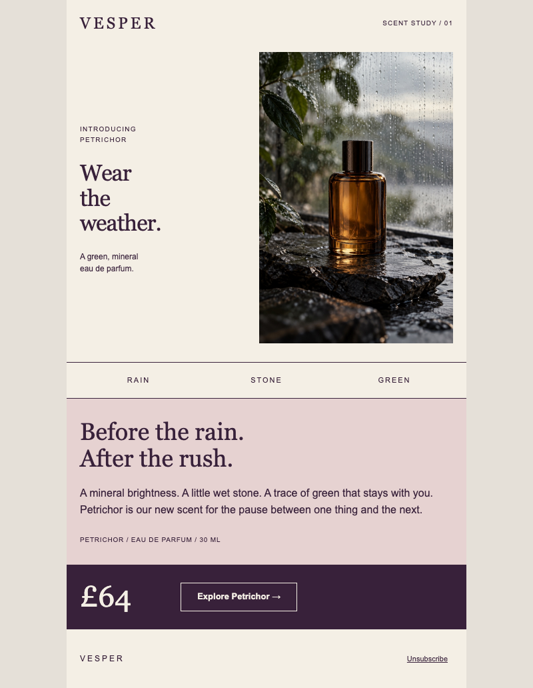
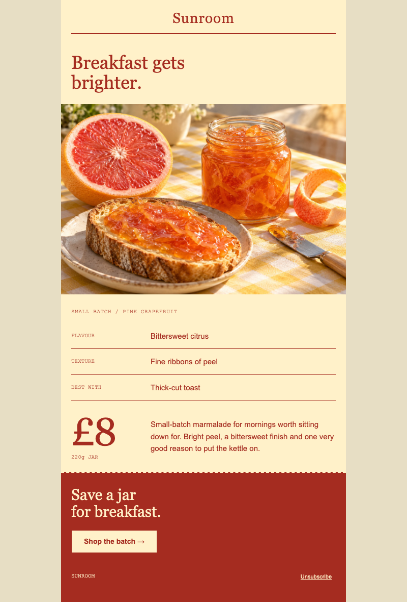
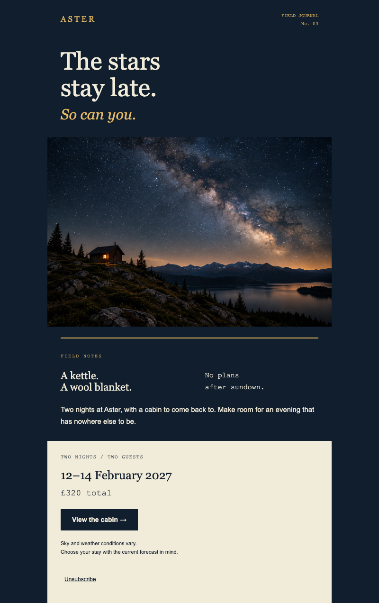
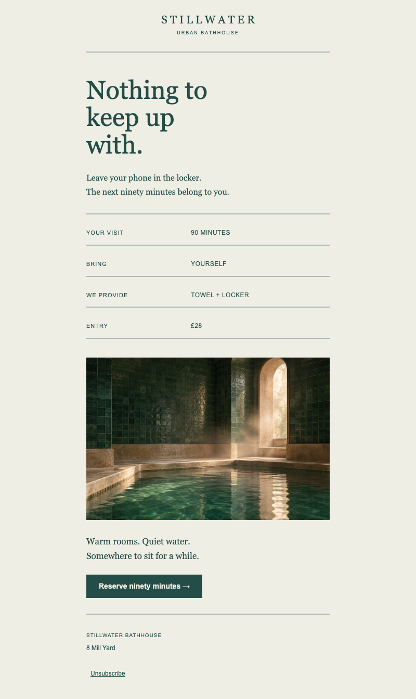
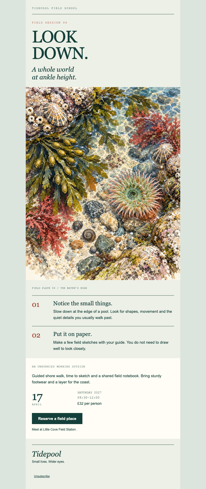
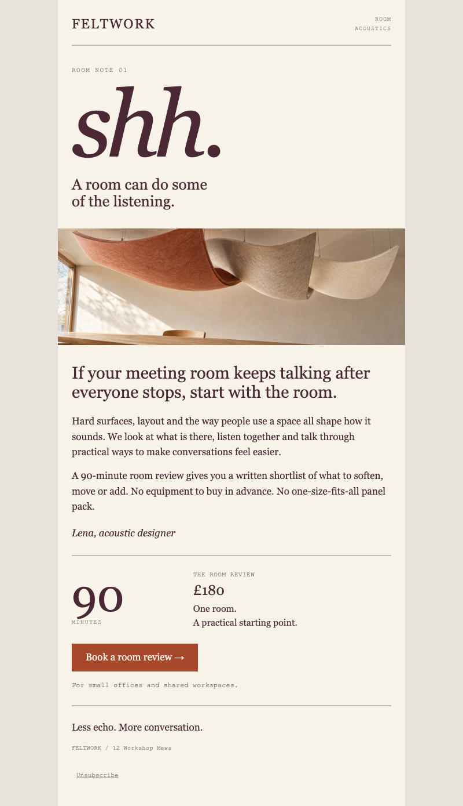
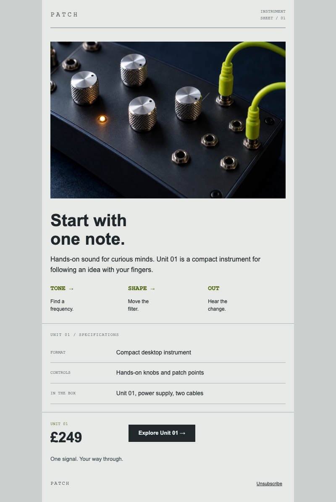
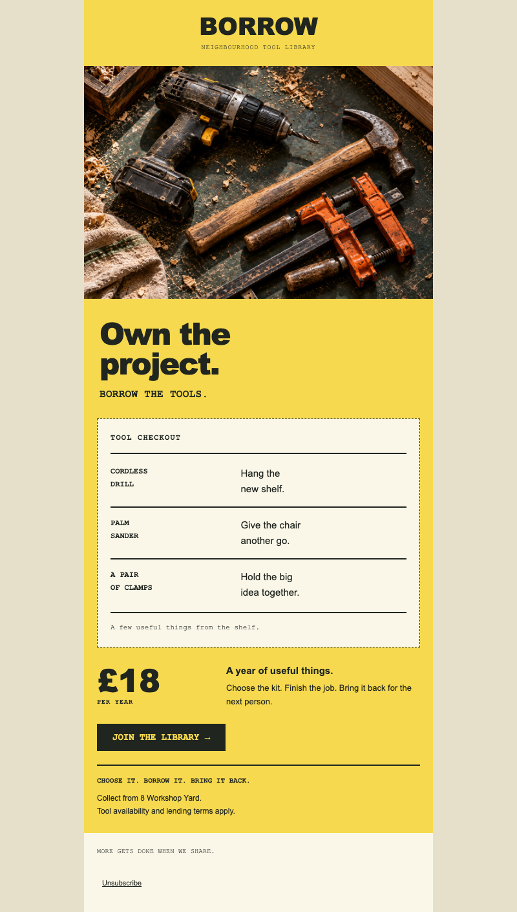
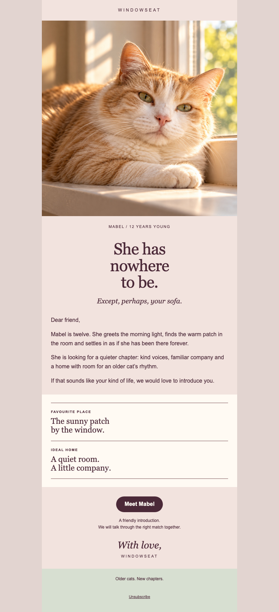
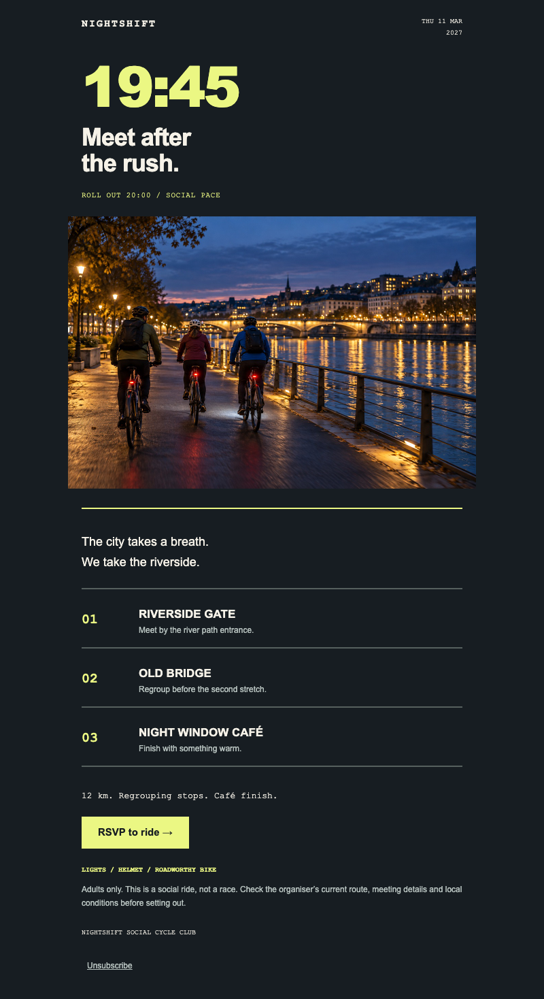

Retail · Product launch
Wear the weather
An ivory and plum fragrance editorial with an asymmetric scent-study spread, original rainy bottle portrait, sensory note index and quiet price close.
Weavour · Email design collection
Ten new templates across ten industries. Each began with a visual study and was implemented with native editable blocks. Open a template to explore the local preview.

Retail · Product launch
An ivory and plum fragrance editorial with an asymmetric scent-study spread, original rainy bottle portrait, sensory note index and quiet price close.

Food & drink · Promotion
A sunny preserve-maker order slip with an original marmalade still life, a ruled tasting ledger, a large live price and a tear-off-style order close.

Travel · Promotion
A remote cabin stay presented as a midnight field journal, with a serif opening, a star-filled panorama, brief observational notes and a contrasting reservation slip.

Health & wellness · Service
An urban bathhouse appointment slip in pale bone and jade, with large quiet serif copy, native receipt rows, a late architectural image and a restrained booking action.

Education · Event
An illustrated coastal field-class invitation composed as a naturalist notebook, with an original watercolour tidepool plate, live numbered observations and a practical booking page.

Business · Service
A room-acoustics consultation letter with an oversized italic opening, a panoramic wool-felt material study, a personal designer note and a ruled appointment summary.

Technology · Product launch
A light steel-paper instrument manual with an opening synthesizer macro photograph, a live horizontal signal path, restrained olive annotations and a compact specification and ordering ledger.

Community · Promotion
A neighbourhood tool-library membership email designed as a bold photo-first checkout slip, with a live dashed inventory receipt and a clear annual membership close.

Pets · Promotion
A quiet senior-cat adoption invitation built around an original sunlit portrait, a live personal letter, short full-width profile notes and a gentle meeting invitation.

Sports & outdoors · Event
An after-dark social cycling dispatch led by a giant meeting time, reflector-yellow type, a cinematic riverside photograph and native route rows.